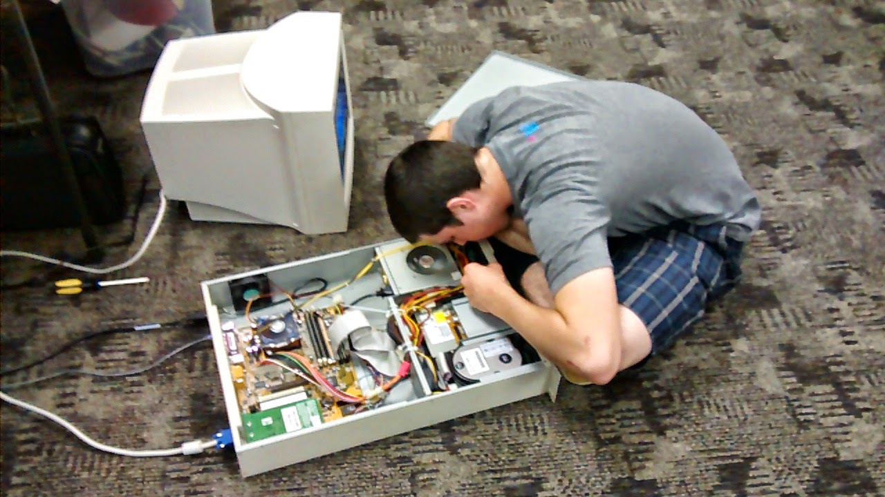
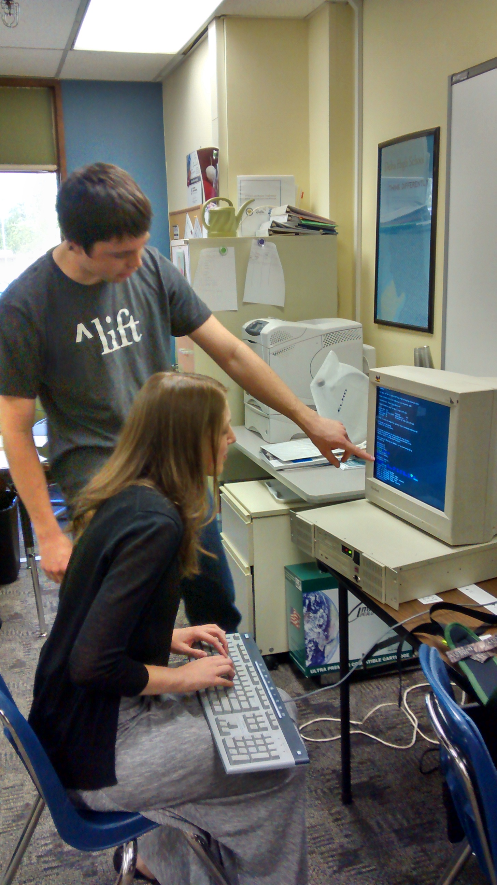
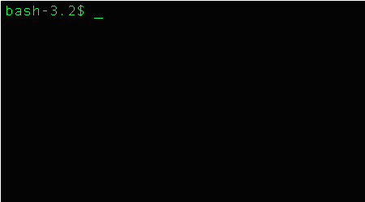
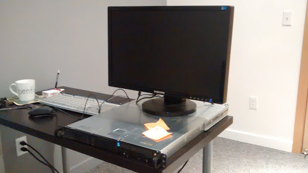
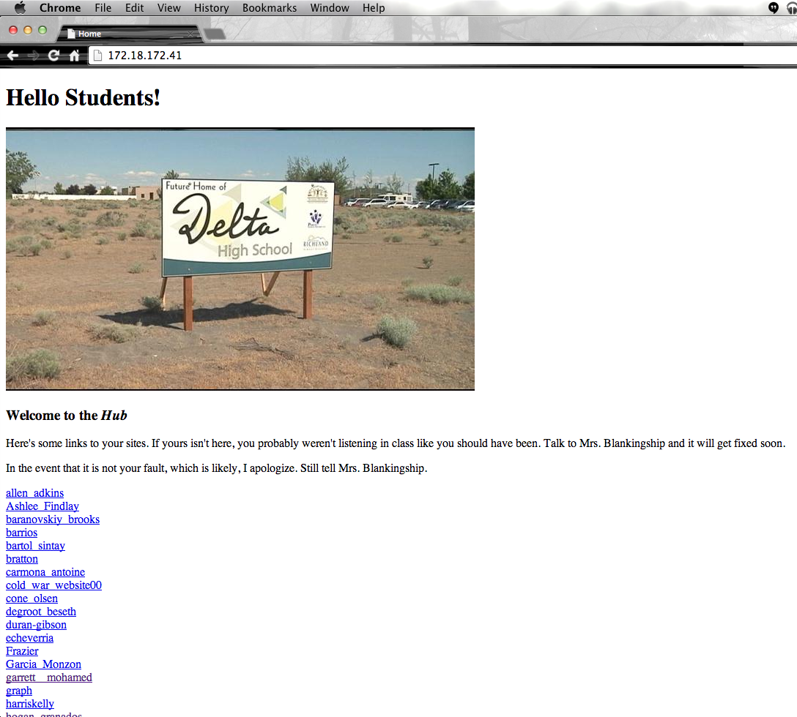
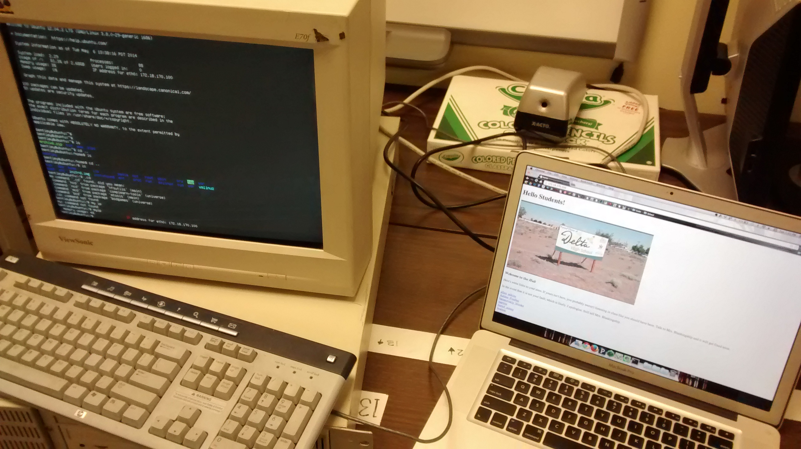

Senior Project
Bentley Jensen
My Project
Servers for SCIENCE

Servers for science wasn't the first idea.
CS in the Classrom
- CS in the classroom is something every school should have
- I thought I wanted to be an engineer until I started coding
- I think more kids should have the chance to see what CS is like
Servers for Science
My project revolved around this piece of computational machinery.

It broke a lot.
Community impact

Mrs. Blankingship navigating the server
Challenge

The good

In Hindsight

The homepage
In Closing

The first sucessful request at school